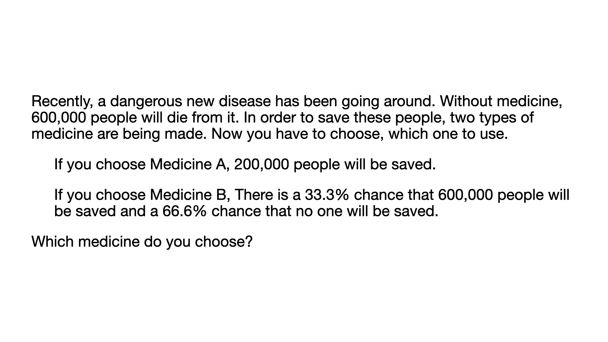

<!DOCTYPE html>
<html>
    <head>
        <title>Main Experiment</title>
        <script src="https://unpkg.com/jspsych@7.3.4"></script>
        <script src="https://unpkg.com/@jspsych/plugin-survey-likert@1.1.3"></script>
        <script src="https://unpkg.com/@jspsych/plugin-survey-multi-choice@2.0.0"></script>
        <script src="https://unpkg.com/@jspsych/plugin-instructions@1.1.4"></script>
        <script src="https://unpkg.com/@jspsych/plugin-html-keyboard-response@1.1.3"></script>
        <script src="https://unpkg.com/@jspsych/plugin-html-button-response@1.2.0"></script>
        <script src="https://unpkg.com/@jspsych/plugin-image-button-response@2.0.0"></script>
        <link href="https://unpkg.com/jspsych@7.3.4/css/jspsych.css" rel="stylesheet" type="text/css" />
    </head>
    <body></body>
    <script>
        // Initialize jsPsych
        var jsPsych = initJsPsych();
        var timeline = [];

        /**  Preload images  */
        /**  Welcome  */
        var welcome = {
            data: {
                screen_id: "welcome"
            },
            type: jsPsychHtmlButtonResponse,
            stimulus: '<h1>Welcome to our hypothetical decision-making experiment.</h1><p><br>Please use Chrome, Firefox, Safari or Edge, and make sure that your Internet connection is stable.</p>',
            choices: ["Click here to continue"]
        };

        timeline.push(welcome);

        /**  Consent  */

        /**  Instructions  */

        /**  Practice  */

        /**  Formal  */

        // Stimuli
        var test_stimuli = [
            {
                frame: "gain",
                question: "",
            },
            {
                frame: "loss",
                question: "",
            },
        ];


        // Fixation 
        var fixation = {
            type: jsPsychHtmlKeyboardResponse,
            stimulus: '<div style="font-size:60px;">Next Question</div>',
            choices: "NO_KEYS",
            trial_duration: 1000,
        };

        // Test
        var test = {
            type: jsPsychSurveyMultiChoice,
            questions: [
              {
                prompt: jsPsych.timelineVariable('question'),  // Use the question from timeline variables
                options: ['A', 'B', 'C: Flip coin'], 
                required: true,
                horizontal: true
              }, 
            ],
        };
      
          /* define test procedure */
          var test_procedure = {
            timeline: [fixation, test],
            timeline_variables: test_stimuli
          };
          timeline.push(test_procedure);

        // Run the experiment
        jsPsych.run(timeline);
    </script>
</html>